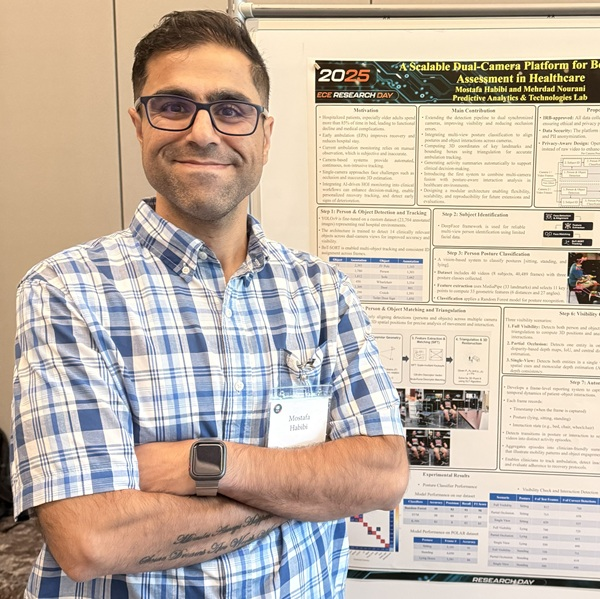

AI/ML Engineer & Researcher
Building intelligent systems at the intersection of computer vision, LLMs, and healthcare AI

I am an AI/ML engineer and researcher with 3+ years of hands-on experience building production-grade computer vision systems, LLM-powered pipelines, and cloud-connected AI applications. I specialize in designing and delivering end-to-end intelligent systems — from multi-camera tracking and object detection to agentic AI workflows and FHIR-compliant data pipelines.
Currently completing my Ph.D. at the University of Texas at Dallas, I have shipped AI systems used in real healthcare settings, published at top IEEE venues, and hold the AWS Certified AI Practitioner credential. I bring strong Python, PyTorch, and AWS skills alongside a practical engineering mindset focused on results.
Designed a dual-camera system integrating YOLO, DeepFace, SIFT-based matching, and triangulation for robust patient tracking and human–object interaction analysis in clinical environments.
Built a multi-agent AI platform that converts unstructured clinical notes into standardized, queryable FHIR-compliant structured data using adaptive auditing and locally deployed open-weight LLMs.
Developed AI-based performance analysis for track and field athletes — posture classification, kinematic analysis, and performance ranking using landmark extraction and ART2 clustering.
Built scalable vision-language systems combining computer vision outputs with LLM summarization to generate clinically relevant patient behavior reports for caregivers, deployed on AWS.
Designed and evaluated an integrated deep learning architecture for robust object detection under challenging low-light conditions, published at IEEE SSIAI 2026.
University of Texas at Dallas, Richardson, TX
University of Texas at Dallas, Richardson, TX
Shahid Bahonar University, Kerman, Iran
Replace each href="#" with the individual credential URL once available.